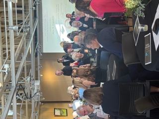
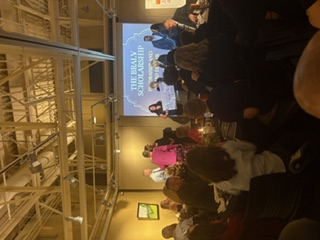
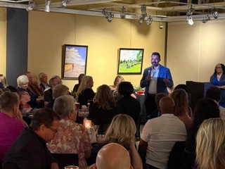
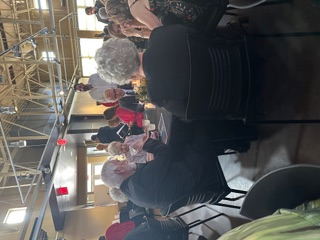

Empowering the next generation
of caregivers.
The Braly Scholarship raises essential funds to support aspiring and current healthcare workers — opening doors for the people who will care for our community for decades to come.
Keeping great care close to home.
The Braly Scholarship Fundraiser aims to raise essential funds to support scholarships for aspiring and current healthcare workers. The scholarship gives preference to residents of Paulding County who have a genuine passion for patient care.
What began as a tribute to one beloved physician has grown into a community tradition — neighbors, businesses, and families coming together each year to invest in the future of local healthcare.



Four decades of generosity, measured in lives.
Every gift opens a door.
Donations and ticket sales translate directly into tuition, training, and opportunity for students across the spectrum of healthcare.
Tuition & fees
Direct financial support that helps students focus on their studies instead of their bills.
Future caregivers
Nurses, technicians, therapists, and physicians who will serve Paulding County and beyond.
A lasting legacy
A self-sustaining tradition of giving that carries Dr. Braly's compassion into every new generation.
How to apply.
If you're a dedicated student with a passion for healthcare and patient care, we encourage you to apply.
Check eligibility
Review the criteria below to confirm the scholarship is the right fit for your goals.
Prepare materials
Gather your academic records, a statement of purpose, and references that speak to your commitment to care.
Submit online
Applications are managed through the Wellstar Foundation scholarship portal during each award cycle.
- Open to aspiring and current healthcare students.
- Preference given to residents of Paulding County, Georgia.
- A demonstrated passion for patient care and service to the community.
Be part of someone's future.
Whether you give, attend the dinner, or sponsor an evening, your support becomes a scholarship — and a scholarship becomes a career in care.